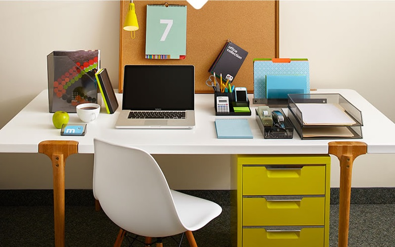

Ambientes organizados podem contribuir com a qualidade do trabalho na empresa
Ambientes organizados nos trazem uma sensação de conforto, melhoram nosso humor e além disso, também contribui com a qualidade do trabalho, afinal a bagunça atrapalha nossa criatividade e nosso cérebro perde o foco, em vez de focar em todas as atividades que devem ser desenvolvidas, ele acaba focando em toda a bagunça do ambiente.
A Organização no trabalho é muito importante, pois contribui para que haja um melhor desempenho e desenvolvimento do funcionário,
gerando um ambiente mais produtivo. Além disso, os clientes percebem quando a empresa é um local organizado, bem estruturado e
quando é um lugar bagunçado, que traz a ideia de “desleixo” ou de pouca credibilidade.
Desse modo para ter um ambiente de trabalho mais organizado é importante seguir algumas dicas: Descarte o desnecessário, deixe no ambiente de trabalho somente o essencial; deixe poucos objetos em cima da mesa; coloque cada objeto em seu lugar específico e pense na ergonomia e na funcionalidade dos monitores, cadeiras e mesas, buscando poupar os funcionários de desconfortos e dores de coluna para que eles fiquem o mais confortável possível no ambiente de trabalho.
Sendo assim, manter todos os objetos e materiais usados no dia a dia em ordem irá gerar menos estresse e otimizar o tempo, além de ter melhorias na produtividade do trabalhador, na motivação, no desempenho e passar uma melhor imagem aos clientes.